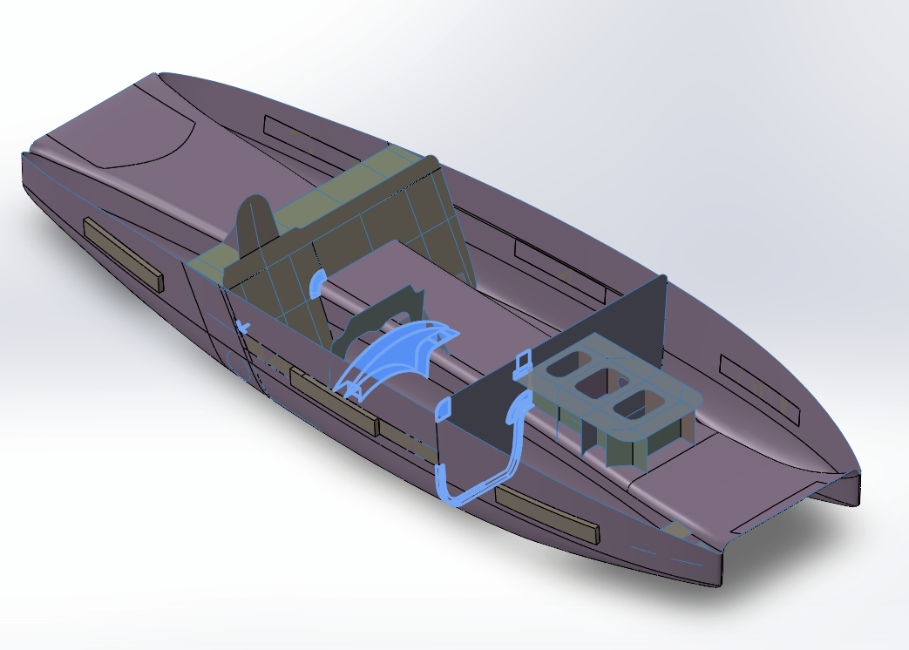
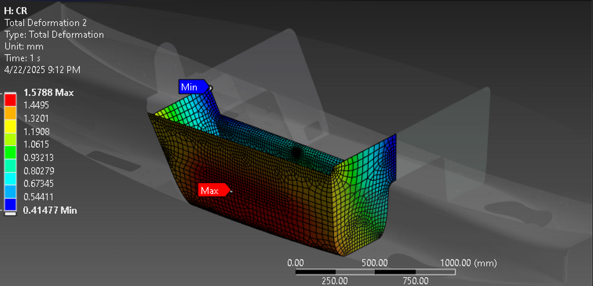

FIG.00 / calsol / hero2024
CalSol — Solar Car Team
I served as the occupant cell lead and dashboard lead during my time at UC berkeley's solar car team. In both roles I was responsible for not only leading a team of student engineers but also designing, validating, and manufacturing the occupant cell for various crash scenarios and regulations, while optimizing weight to make sure the car could run as fast as possible.
As CalSol started moving into designing their new generation car, I led the redesign of the occupant cell, managing about 8 student engineers. We shifted the design from a side mounted to a middle mounted configuration and worked closely with every other subsystem on the car, including the ballast box, dashboard, brakes, suspension, roll cage, shell, and electrical, to make sure the cell integrated cleanly as those systems evolved in parallel from changing simple dimensions to complex geometries. I ran FEA crash simulations on the finalized design, designed the carbon fiber layup rig, and set up composite testing ahead of manufacturing. This work resulted in an initial FEA factor of safety of about 4, sign off from every subsystem lead on fitment, and physical manufacturing now underway.


Given a legacy made chassis, I was tasked with modernizing an old design to help improve safety of the rider under new regulations and design changes. Using Ansys, I performed FEA structural simulations on the occupant cell to improve its safety performance. The original design given to me had a factor of safety of only 0.4, indicating significant risk under crash loads of 50 kN. Through iterative design optimization, including more detailed composite modeling with Ansys ACP, factor of safety increased to 1.2, ensuring the structure could withstand predicted impact forces during an accident.
To achieve this outside of sims, I helped design and manufacture lightweight crash structures weighing approximately 20 lbs in total to balance strength and mass efficiency. Load bearing elements, such as ribs and U-channels, were made from aluminum 6061-T6 for its high yield strength, while resin was used in structural zones to absorb impact forces and redirect loads away from the occupant cell, with additive manufactured molds created and placed onto the car to cure.




Before becoming Gen XI occupant cell lead, I helped contextualize, design, and place a new dashboard into our next solar car. Not only did I design the dashboard to fit into our occupant cell, but I also designed for the ergonomics of the driver placing and using it. This required me to talk to cross functional teams such as dynamics, shell, and electrical to meet their design standards and address change issues as they arose. I also simulated the dashboard under extreme load cases (driver coming out and using it as support, the force from a sudden jerk of the steering wheel, or under braking, etc.) and created a model that was able to be easily manufactured through a combination of wet layups and water jetting.
.png)
.png)